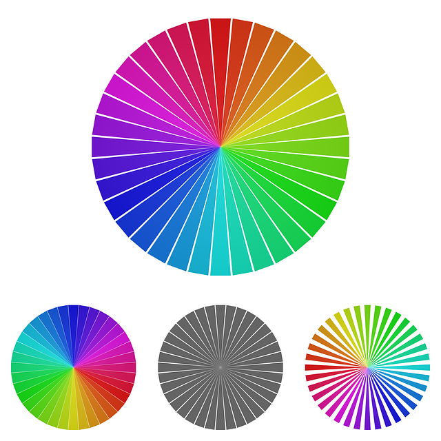
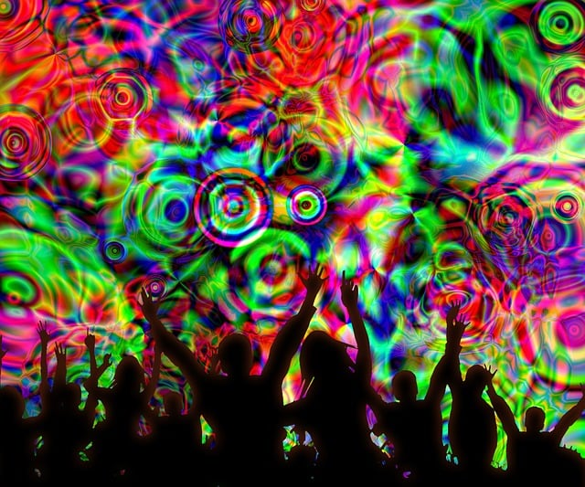
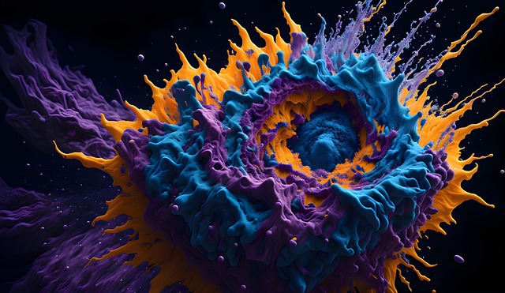

Exploration of Art
Dive in and let's go on a journey to explore the world of art!
Art History and Facts
Color Theory
Color theory is really important when it comes to art. Colors have different moods and tones. For example some cool tones would be blue, white and gray. Some warm tones would be purple, green, brown and yellow. Some examples of bold tones are red, black, and orange. How certain colors are used can definitely effect one's perception and mood........read more
Why study Art?
Art is everywhere literally! Art is on the clothing one would buy at the store. It's on billboards, It's on TV and all over the internet. Due to all of these facts I think it would be wise for one to get aquainted with the creative world of art because almost every second of the day........read more
Art Therapy?
Art is a well known tool for people to use for therapy purposes. Many people find joy in creating all forms of art to better express themselves through multiple art outlets.........read more
Art is Fun
Art can definitely be fun for everyone of any age whether a three year old toddler or a 75 year old senior citizen we can all find joy in creating all forms of art. Art is not just paintings, sculptures, photos and digital design. It encompasses so many subjects such as music, film production, nature landscapes, and many others!......read more
Art Value
The true value of all the encompassing art subjects is unknown due to the fact there is so many art forms to keep up with. However if we only include paintings,sculptures, handmade crafts and other similar subjects it would total over 60 billion dollars! A lot of people are using art as a way to earn additional income or they are switching their career to have more interactions making art in their every day lives. As the famous author Mark Twain once said "Find a job you like to do and you'll never work a day in your life"......read more